청소년상담사-2급(1교시) (2020-10-10 기출문제)
1과목: 청소년 상담의 이론과 실제
1. 청소년 내담자의 특성으로 옳지 않은 것은?
- 신체나 외모에 관심이 많으며 자의식이 크다.
- 사회적 관계에서 자아중심적인 특성이 강하다.
- 구체적 조작 단계에 있으므로 인지능력이 우수하다.
- 상담에 대한 자발적 동기가 낮은 경우가 많다.
- 감각적 흥미와 재미를 추구하는 경향이 있다.
(정답률: 72%)

2. 상담이론에 관한 설명으로 옳은 것을 모두 고른 것은?
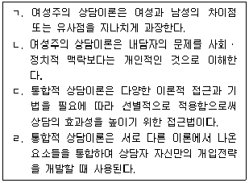
- ㄱ, ㄴ
- ㄷ, ㄹ
- ㄱ, ㄴ, ㄷ
- ㄴ, ㄷ, ㄹ
- ㄱ, ㄴ, ㄷ, ㄹ
(정답률: 62%)
3. 게슈탈트 상담의 접촉경계 장애와 예시를 옳게 연결한 것을 모두 고른 것은?
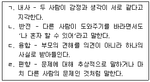
- ㄱ, ㄴ
- ㄱ, ㄷ
- ㄴ, ㄹ
- ㄷ, ㄹ
- ㄱ, ㄴ, ㄷ
(정답률: 45%)
4. 해결중심 상담의 질문기법과 그 적용 예가 옳은 것을 모두 고른 것은?
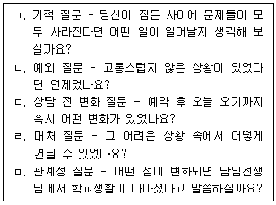
- ㄱ, ㄴ
- ㄴ, ㄷ
- ㄱ, ㄷ, ㄹ
- ㄴ, ㄷ, ㄹ, ㅁ
- ㄱ, ㄴ, ㄷ, ㄹ, ㅁ
(정답률: 73%)
5. 매체상담에 관한 설명으로 옳지 않은 것은?
- 전화상담의 경우 단회로 진행되는 경우가 많으며, 신속하게 도움을 요청할 수 있다.
- 전화상담의 경우 익명성으로 인해 성문제 등 드러내기 어려운 주제로 상담하는 경우가 많다.
- 미술치료의 경우 미술이 지닌 상징성이 내담자의 감정을 안전하게 표현할 수 있게 한다.
- 사이버상담의 '즉시성과 현시' 기법은 상담자가 내담자의 글에 대한 자신의 심정과 모습을 생생하게 시각화하여 표현하는 것이다.
- 사이버상담의 '정서적 표현에 괄호 치기' 기법은 침묵하는 것을 나타내거나 눈으로 글을 읽고 있음을 나타낼 때 사용한다.
(정답률: 61%)
6. 아들러(A. Adler)의 개인심리학에 관한 설명으로 옳은 것은?
- 인간은 성적 충동에 의해 일차적으로 동기화되는 존재이다.
- 생활양식은 개인이 지니는 독특한 삶의 방식으로 가족경험에 의해 영향을 받지 않는다.
- 출생순위는 성격형성 과정에 중요한 요인이지만, 가족 내 역할과 심리적 출생순위가 더 중요하다.
- 열등감은 신경증의 원천으로 잠재 능력을 저하시키는 부정적 요인이다.
- 인간은 미래를 향한 목적론적인 존재로서 과거에 의해 영향을 받지 않는다.
(정답률: 66%)
7. 교류분석에 관한 설명으로 옳지 않은 것은?
- 어버이자아가 어른자아를 침범하는 혼합현상으로 망상이 발생한다.
- 배타는 자아상태의 경계가 지나치게 경직되어 심적 에너지의 이동이 거의 불가능한 상태이다.
- 이면교류에서는 사회적 메시지와 심리적 메시지가 나타나며 심리적 메시지가 더 중요하다.
- 게임은 겉으로 친밀한 것처럼 보이지만 결과적으로는 라켓 감정을 유발한다.
- 자기긍정-타인긍정의 자세를 지닌 사람은 자신이 유능하며 인생은 살아갈 만하다고 생각한다.
(정답률: 62%)
8. 실존주의 상담에 관한 설명으로 옳은 것을 모두 고른 것은?
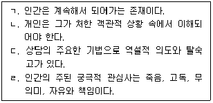
- ㄱ, ㄷ
- ㄴ, ㄹ
- ㄷ, ㄹ
- ㄱ, ㄷ, ㄹ
- ㄱ, ㄴ, ㄷ, ㄹ
(정답률: 32%)
9. 상담자가 갖추어야 할 자질 및 태도에 관한 설명으로 옳지 않은 것은?
- 인간에 대한 깊은 관심과 호기심을 가지며 경험에 개방적이고 수용적이다.
- 자기성찰적 태도를 지니고 있으나 원숙한 적응상태까지는 추구하지 않는다.
- 지역사회 자원, 상담연계기관의 특성 및 사회 환경에 대한 이해가 있다.
- 다른 문화권의 내담자를 상담할 때 자신의 가치관이 방해가 될 수 있음을 안다.
- 상담자가 내담자의 어려움과 비슷한 해결되지 않은 문제를 갖고 있을 경우 역전이 문제를 인식하려고 노력한다.
(정답률: 59%)
10. 청소년 내담자에게 충고나 조언을 할 때 상담자의 개입방법으로 옳은 것을 모두 고른 것은?
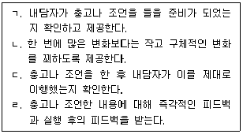
- ㄱ, ㄴ
- ㄴ, ㄷ
- ㄷ, ㄹ
- ㄴ, ㄷ, ㄹ
- ㄱ, ㄴ, ㄷ, ㄹ
(정답률: 59%)
11. 청소년 상담사의 윤리로 옳은 것은?
- 내담자와의 다중관계는 항상 해롭기 때문에 맺어서는 안 된다.
- 성폭력으로 인한 임신 사실을 알았지만 내담자가 부모 등 누구에게도 알리기를 원치 않아 아무런 조치를 취하지 않았다.
- 상담 중 가정폭력 사실을 알게 되었으나 어머니가 가정의 문제가 크게 확대되는 것을 원치 않아 내담자의 상처받은 마음만 달래주었다.
- 가정법원으로부터 상담내용 공개를 요청받아 내담자에게 그 사실을 알리고 필요한 최소한의 정보를 제공하였다.
- 상담을 전공한 A교수는 자기 지도학생에게 상담료를 받으며 주 1회 상담을 정규적으로 진행하였다.
(정답률: 63%)
12. 사례에서 상담자가 사용한 상담 기술을 활용할 때 유의해야 할 점으로 옳지 않은 것은?
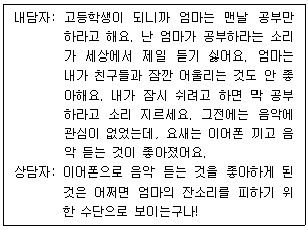
- 가능한 한 전문적인 용어를 사용함으로써 내담자의 통찰능력을 증진시킨다.
- 내담자가 받아들일 준비가 되어 있을 때 하는 것이 효과적이다.
- 상담과정에서 수집하고 확인한 구체적이고 실제적인 정보를 근거로 제공한다.
- 내담자의 현재 욕구를 존중하고 내담자의 인지적ㆍ성격적 특성을 고려해서 이루어져야 한다.
- 신뢰로운 상담관계가 형성된 이후 가설적이고 잠정적인 표현을 사용한다.
(정답률: 68%)
13. 보기에서 설명하고 있는 현상으로 옳은 것은?
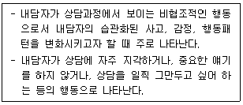
- 저항
- 억압
- 침묵
- 부인
- 전이
(정답률: 68%)
14. 사례에서 나타나는 인지적 오류로 옳은 것은?
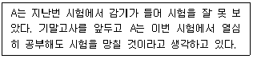
- 이분법적 사고
- 과잉일반화
- 개인화
- 의미축소
- 독심술
(정답률: 57%)
15. 행동주의 상담에 관한 설명으로 옳지 않은 것은?
- 내담자의 성격변화와 인격적 성장을 상담목표로 한다.
- 부적응 행동이 습득되고 유지되는 과정을 학습이론에 근거하여 설명한다.
- 내담자의 문제행동에 대한 분석이 이루어지면 내담자와 함께 구체적인 상담목표를 설정한다.
- 체계적 둔감법은 공포증과 같은 불안장애의 치료에 효과적이다.
- 강화와 소거 등의 원리를 사용하여 내담자의 행동을 수정한다.
(정답률: 64%)
16. 사례에서 A가 사용하는 방어기제로 옳은 것은?
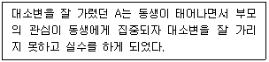
- 억압
- 부인
- 투사
- 퇴행
- 승화
(정답률: 70%)
17. 청소년기에 경험하는 주요문제와 발달과제에 관한 설명으로 옳지 않은 것은?
- 학업과 진로문제는 청소년기의 주요한 고민에 해당한다.
- 자아정체감의 형성은 청소년기의 중요한 발달과제이다.
- 내분비선의 변화로 인해 신체적ㆍ성적 발달에 영향을 받으며 이와 관련된 고민이 증가한다.
- 가족관계에서의 발달과제는 부모와의 애착형성이다.
- 대인관계의 범위가 확대되면서 친구관계에서 여러 가지 어려움을 겪기도 한다.
(정답률: 68%)
18. 우볼딩(R. Wubbolding)이 제시한 행동계획을 수립할 때 고려해야 할 사항으로 옳지 않은 것은?
- 단순하고 이해하기 쉬워야 한다.
- 성취여부를 측정할 수 있도록 설정되어야 한다.
- 내담자가 통제할 수 있어야 한다.
- 즉각적으로 실행할 수 없더라도 미래를 위한 것이어야 한다.
- 실현가능한 것이어야 한다.
(정답률: 62%)
19. 인간중심 상담이론에 관한 설명으로 옳은 것을 모두 고른 것은?
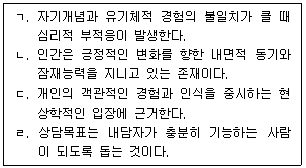
- ㄱ, ㄴ
- ㄱ, ㄴ, ㄹ
- ㄱ, ㄷ, ㄹ
- ㄴ, ㄷ, ㄹ
- ㄱ, ㄴ, ㄷ, ㄹ
(정답률: 53%)
20. 합리정서행동치료(REBT)에 관한 설명으로 옳은 것은?
- 심리적 부적응은 미해결 과제가 해소되지 못할 때 발생한다.
- 구체적인 상담 기법보다 내담자에 대한 상담자의 태도를 더 중요시한다.
- 상담목표는 내담자의 억압된 충동을 자각하게 하는 것이다.
- 인간은 실존적 불안을 지니며 삶의 의미와 목적을 추구한다.
- 내담자의 비합리적 신념을 논박하기 위하여 소크라테스식 문답법 등이 사용된다.
(정답률: 60%)
21. 청소년상담의 특징으로 옳은 것은?
- 상담의 대상은 청소년과 부모에 한정된다.
- 청소년의 발달특징은 상담개입에서 중요하게 고려되지 않는다.
- 개인상담 뿐만 아니라 집단교육과 매체를 이용하는 등 다양한 방법을 활용한다.
- 청소년이 당면한 문제의 해결보다는 문제의 예방을 우선시한다.
- 상담의 대상, 목표와 개입방법은 성인상담과 동일하다.
(정답률: 59%)
22. 상담기법과 상담자 반응이 옳게 연결된 것을 모두 고른 것은?
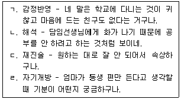
- ㄱ
- ㄴ
- ㄱ, ㄷ
- ㄴ, ㄷ
- ㄷ, ㄹ
(정답률: 37%)
23. 상담의 초기단계에 관한 설명으로 옳지 않은 것은?
- 내담자와 합의하여 상담목표를 수립한다.
- 상담여건, 상담관계, 비밀보장 등에 대해 구조화한다.
- 내담자와 신뢰로운 상담관계를 형성한다.
- 내담자의 문제를 이해하고 평가한다.
- 과정목표를 설정하고 달성한다.
(정답률: 57%)
24. 상담의 종결단계에서 다루는 내용으로 옳은 것을 모두 고른 것은?
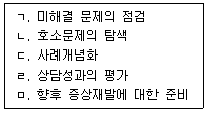
- ㄱ, ㄴ
- ㄹ, ㅁ
- ㄱ, ㄷ, ㅁ
- ㄱ, ㄹ, ㅁ
- ㄱ, ㄴ, ㄷ, ㄹ
(정답률: 60%)
25. 사례에서 상담자가 사용한 기법으로 옳은 것은?
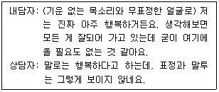
- 재진술
- 직면
- 공감
- 해석
- 즉시성
(정답률: 59%)
2과목: 상담연구방법론의 기초
26. 양적연구에 관한 설명으로 옳지 않은 것은?
- 인과관계와 관련하여 원인과 결과를 분석하는 것이 가능하다.
- 내부자적 관점을 중시하며, 현상학적 전통을 따른다.
- 자료를 수집하기 전에 구체적인 연구가설을 설정한다.
- 일반적 법칙 발견과 연구결과의 일반화를 시도한다.
- 많은 수의 표본을 필요로 하며 확률적 표집방법을 사용한다.
(정답률: 35%)
27. 표집 방법 중 확률표집에 해당하는 것은?
- 층화표집(stratified sampling)
- 편의표집(convenience sampling)
- 할당표집(quota sampling)
- 유의표집(purposive sampling)
- 눈덩이표집(snowball sampling)
(정답률: 31%)
28. 타당도를 높일 수 있는 방법에 관한 설명으로 옳은 것을 모두 고른 것은?
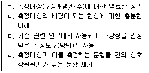
- ㄱ, ㄴ
- ㄴ, ㄷ
- ㄱ, ㄷ, ㄹ
- ㄴ, ㄷ, ㄹ
- ㄱ, ㄴ, ㄷ, ㄹ
(정답률: 25%)
29. 사전-사후 검사 통제집단 설계에 관한 설명으로 옳지 않은 것은?
- 사전검사를 활용하여 연구 참여 지원자의 참여여부를 결정할 수 있다.
- 두 집단에 피험자를 무선 할당한다.
- 두 집단 모두 사전-사후 검사를 받는다.
- 두 집단 모두 처치를 받는다.
- 사전검사를 공변량으로 사용함으로써 개인 간의 오차 변량을 조정할 수 있다.
(정답률: 29%)
30. 실험실 실험연구에 관한 설명으로 옳지 않은 것은?
- 가외변인에는 표본의 편중, 시험효과, 모방효과 등이 있다.
- 상담학연구의 실험실 실험연구에는 모의상담이 해당된다.
- 종속변인에 영향을 미치는 처치변인 외에 가외변인에 대한 통제가 중요하다.
- 처치ㆍ자극ㆍ환경 조건을 인위적으로 조작(통제)하여 종속변인이 어떤 변화를 보이는지를 분석한다.
- 현장 실험연구에 비해 외적 타당도가 높은 편이다.
(정답률: 26%)
31. 실험연구의 타당도에 관한 설명으로 옳은 것을 모두 고른 것은?
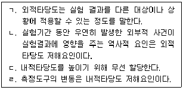
- ㄱ, ㄷ
- ㄴ, ㄹ
- ㄱ, ㄴ, ㄷ
- ㄱ, ㄷ, ㄹ
- ㄱ, ㄴ, ㄷ, ㄹ
(정답률: 12%)
32. 조사연구의 진행 순서를 바르게 나열한 것은?
- 문제제기-조사설계-자료수집-자료분석-결과해석 및 보고
- 문제제기-자료수집-조사설계-자료분석-결과해석 및 보고
- 자료수집-조사설계-문제제기-자료분석-결과해석 및 보고
- 자료수집-조사설계-자료분석-문제제기-결과해석 및 보고
- 조사설계-자료수집-자료분석-문제제기-결과해석 및 보고
(정답률: 25%)
33. 구조방정식 모형의 절대적합도 지수(absolute fit index)만으로 묶인 것은?
- TLI, RMSEA
- TLI, CFI
- GFI, CFI
- GFI, TLI
- GFI, RMSEA
(정답률: 15%)
34. 표본크기에 관한 설명으로 옳지 않은 것은?
- 모집단 구성원 특성이 다양할수록 표본의 수는 커져야 한다.
- 추정치 정확도의 정도, 시간과 비용의 제한 등을 고려해야 한다.
- 표본수가 줄어들수록 모집단에 대한 추정의 정확성이 높아지게 된다.
- 신뢰구간 접근법은 모집단의 분산이 알려져 있을 경우 표본크기 산정에 사용할 수 있다.
- 모집단의 분산이 알려져 있지 않은 경우 가설검증 방법을 사용하여 모집단의 표준편차를 추정해 표본의 크기를 결정할 수 있다.
(정답률: 35%)
35. 조사연구(survey research)의 일반적 특징으로 옳은 것을 모두 고른 것은?
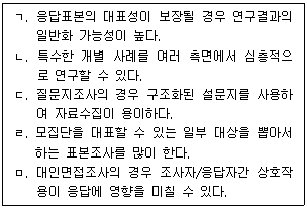
- ㄱ, ㄷ
- ㄱ, ㄷ, ㄹ
- ㄴ, ㄹ, ㅁ
- ㄱ, ㄷ, ㄹ, ㅁ
- ㄱ, ㄴ, ㄷ, ㄹ, ㅁ
(정답률: 22%)
36. 다음 ( )에 들어가는 단어들로 바르게 나열한 것은?
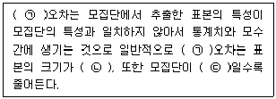
- ㉠ 표집, ㉡ 작을수록, ㉢ 동질적
- ㉠ 표집, ㉡ 클수록, ㉢ 이질적
- ㉠ 표집, ㉡ 클수록, ㉢ 동질적
- ㉠ 비표집, ㉡ 클수록 ㉢ 동질적
- ㉠ 비표집, ㉡ 작을수록, ㉢ 이질적
(정답률: 24%)
37. Scheffé 검정에 관한 설명으로 옳은 것을 모두 고른 것은?
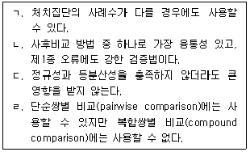
- ㄱ
- ㄴ, ㄹ
- ㄱ, ㄴ, ㄷ
- ㄴ, ㄷ, ㄹ
- ㄱ, ㄴ, ㄷ, ㄹ
(정답률: 6%)
38. 척도에 관한 설명으로 옳지 않은 것은?
- 명목척도에는 성별, 전화번호 등이 있다.
- 서열척도는 순위에 대한 정보를 포함하고 있다.
- 등간척도를 이용하여 평균값, 표준편차, 상관계수를 구할 수 있다.
- 서스톤척도는 척도들 간의 간격이 동일하다 하여 등간격척도라고도 한다.
- 거트만척도는 인종적 편견의 강도를 측정하기 위해 고안한 것으로 사회적 거리척도라고도 한다.
(정답률: 15%)
39. 상담연구 주제 탐구에 해당하는 질문으로 옳은 것을 모두 고른 것은?
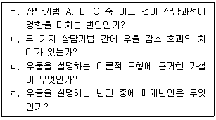
- ㄱ, ㄴ
- ㄴ, ㄷ
- ㄱ, ㄹ
- ㄴ, ㄷ, ㄹ
- ㄱ, ㄴ, ㄷ, ㄹ
(정답률: 24%)
40. 양적 연구 패러다임에 속한 것을 모두 고른 것은?
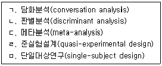
- ㄱ, ㅁ
- ㄴ, ㄷ, ㄹ
- ㄱ, ㄴ, ㄷ, ㄹ
- ㄴ, ㄷ, ㄹ, ㅁ
- ㄱ, ㄴ, ㄷ, ㄹ, ㅁ
(정답률: 15%)
41. 과학으로서의 상담학에 관한 설명으로 옳은 것을 모두 고른 것은?
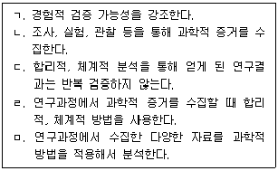
- ㄱ, ㄹ
- ㄴ, ㄷ, ㅁ
- ㄱ, ㄴ, ㄹ, ㅁ
- ㄴ, ㄷ, ㄹ, ㅁ
- ㄱ, ㄴ, ㄷ, ㄹ, ㅁ
(정답률: 35%)
42. 연구논문 작성에 관한 설명 중 일반적으로 옳은 것을 모두 고른 것은?
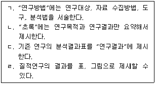
- ㄱ, ㄴ
- ㄱ, ㄹ
- ㄴ, ㄹ
- ㄱ, ㄷ, ㄹ
- ㄱ, ㄴ, ㄷ, ㄹ
(정답률: 10%)
43. 상담연구에서 연구주제 탐색 및 선정 방법으로 옳지 않은 것은?
- 기존 연구에서 이미 분석한 자료를 다시 사용하는 것은 모두 표절이므로 독창적 연구가 될 수 없다.
- 기존 연구의 연구설계에 대해 의문점을 갖고 해당주제를 다른 연구설계로 탐구한다.
- 유사한 연구들이 각각의 연구결과를 제시하는데, 이를 통합해서 결과를 도출할 수 있다.
- 이론적 모형을 검정하기 위해 실증적 자료를 수집해서 분석한다.
- 상담 실무에서 같은 상담기법이지만 내담자 특성에 따라 효과가 다름을 인식하고 연구를 시도한다.
(정답률: 37%)
44. 상담 성과 연구에 관한 설명으로 옳지 않은 것은?
- 무처치집단을 설정하고 연구할 때는 윤리적 문제를 고려해야 한다.
- 실험연구는 상담의 성과를 확인할 수 있지만, 조사연구는 확인할 수 없다.
- 공통요인을 검증하기 위해 다수의 상담자와 그들의 내담자를 표집한다.
- 작업동맹은 상담 성과를 예측하는 변인 중의 하나이다.
- 처치의 결과를 반복측정하고자 할 때 일정 기간을 두고 시점별 동일한 측정도구를 사용한다.
(정답률: 30%)
45. 분산분석(ANOVA)에 관한 가정과 특징으로 옳지 않은 것은?
- 각 집단의 모집단 분산이 같아야 한다.
- 각 모집단의 분포가 정규분포이어야 한다.
- 분산분석에서의 종속변수는 양적변수이어야 한다.
- 세 집단 이상의 집단 간 차이를 비교할 때 실시한다.
- 종속변수의 수에 따라 일원분산분석, 이원분산분석, 삼원분산분석으로 구분할 수 있다.
(정답률: 8%)
46. 다음은 또래관계 유형에 따른 심리적 특성의 차이를 확인하기 위해 다변량분산분석을 실시한 결과이다. 옳지 않은 것은?
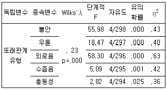
- Wilks'λ 값을 보면 또래관계 유형 간 심리적 특성의 차이가 있다.
- 단계적 F 값은 종속변수 간 공변량 효과 검증 전에 값으로 교정을 위한 추가분석이 필요하다.
- η2값이 클수록 각 종속변수에 대한 독립변수의 설명력이 증가한다.
- 독립변수가 외로움의 총 변화량 63%를 설명한다.
- 또래관계 유형에 따라 불안, 우울, 외로움, 수줍음, 충동성은 통계적으로 유의한 차이(p ＜ .⑤)가 있다.
(정답률: 10%)
47. 다음 연구사례에 해당하는 분석방법은?
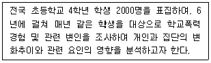
- 경로분석
- 횡단적 경향분석
- 중다회귀분석
- 잠재성장모형
- 계층적 군집분석
(정답률: 15%)
48. 다음 연구방법과 자료분석 방법의 연결 중 옳은 것을 모두 고른 것은?
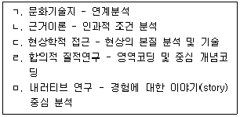
- ㄱ, ㄷ, ㅁ
- ㄴ, ㄹ, ㅁ
- ㄱ, ㄴ, ㄷ, ㄹ
- ㄴ, ㄷ, ㄹ, ㅁ
- ㄱ, ㄴ, ㄷ, ㄹ, ㅁ
(정답률: 21%)
49. 질적연구의 타당성에 관한 설명으로 옳지 않은 것은?
- 연구자의 자기성찰(self-reflection)은 주관성을 배제할 수 없어서 타당성을 저해한다.
- 다원화(triangulation)의 기법으로 타당성을 확보한다.
- 외부 감사(audit)는 외부의 전문가, 감수자들이 연구의 과정과 결과를 평가하는 방법이다.
- 참여자 확인(member check)을 통해 분석의 정확성을 검토하고 연구결과 및 해석의 타당성을 확보한다.
- 윤리적 타당성을 확보하기 위해 연구주제가 윤리적 측면과 다양한 목소리를 균형 있게 반영했는지 검토한다.
(정답률: 25%)
50. 연구윤리에 관한 설명 중 옳은 것은?
- 무기명으로 자료를 수집할 때 연구참여 동의서를 생략한다.
- 사전에 연구대상과 보호자에게 연구참여 기간 동안 중도철회할 권리가 있음을 알린다.
- 자료수집 기간을 알리고 실험처치에서 기만(deception) 방법이 필요한 경우, 피험자에게 사후에 설명하지 않는다.
- 연구참여로 인해 무처치집단에 배정된 참여자의 의사와 상관없이 연구종료와 동시에 처치상황을 종료한다.
- 미성년자인 만 16세의 비장애 고등학생을 대상으로 조사할 때 보호자의 동의로 본인 동의를 대신한다.
(정답률: 35%)
3과목: 심리측정 평가의 활용
51. 비구조화된 면접법과 비교하여 구조화된 면접법의 특징으로 옳은 것은?
- 일관적이고 체계적인 정보를 수집하는 데 불리하다.
- 면접자 간 신뢰도가 낮다.
- 수검자의 상황에 따라 질문의 내용이나 순서를 바꾸기가 쉽다.
- 면접자의 주관이 개입할 여지가 적다.
- 동일한 영역에 대한 객관적인 평가가 어렵다.
(정답률: 27%)
52. 심리검사의 개발 순서로 옳은 것은?
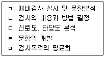
- ㄱ - ㅁ - ㄴ - ㄷ - ㄹ
- ㄴ - ㅁ - ㄱ - ㄷ - ㄹ
- ㄴ - ㅁ - ㄹ - ㄷ - ㄱ
- ㅁ - ㄴ - ㄱ - ㄹ - ㄷ
- ㅁ - ㄴ - ㄹ - ㄱ - ㄷ
(정답률: 26%)
53. 피어슨(Pearson)의 적률상관계수에 관한 설명으로 옳지 않은 것은?
- 두 변수의 상관계수는 그 변수의 산포도를 반영한다.
- 상관계수는 두 변수가 공유하는 분산의 비율이다.
- 두 변수의 상관계수는 각 변수의 표준편차의 영향을 받는다.
- -1.00에서 +1.00까지의 범위를 갖는다.
- 상관계수 -.70은 +.50보다 더 큰 연관성을 나타낸다.
(정답률: 6%)
54. 검사 문항의 제작에 관한 설명으로 옳은 것은?
- 문항곤란도를 높이기 위해 의도적으로 오답을 하도록 문항을 각색할 필요가 있다.
- 여러 조건이 붙은 길고 복잡한 문항을 사용하는 것이 바람직하다.
- 문항과 총점 간 상관계수가 큰 문항부터 제외한다.
- 문항특성곡선이 수평으로 된 문항은 변별력이 높은 문항이다.
- 문항특성곡선이 왼쪽 위로부터 오른쪽 아래로 완만하게 내려오는 문항은 변별력이 낮은 문항이다.
(정답률: 20%)
55. 행동평가법에 관한 설명으로 옳지 않은 것은?
- 처치 후 문제행동의 변화를 평가하는 데 유용하다.
- 이야기 기록법은 행동을 체크리스트나 척도 상에서 기록하는 방법이다.
- 간격 기록의 방법에는 시간표집과 간격표집도 있다.
- 사건 기록에서는 행동의 빈도, 강도, 지속기간을 기록한다.
- 행동평가법은 시간과 인원, 장비 측면에서 비효율적이다.
(정답률: 24%)
56. 다음 중 최대수행능력을 측정하는 검사는?
- MMPI-2
- 스트롱-켐벨(Strong-Campbell) 흥미검사
- 홀랜드(Holland) 직업유형검사
- K-WAIS-Ⅳ
- 카텔(R. Cattell)의 16PF
(정답률: 27%)
57. 타당도에 관한 설명으로 옳은 것을 모두 고른 것은?
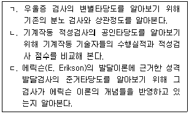
- ㄱ
- ㄱ, ㄴ
- ㄱ, ㄷ
- ㄴ, ㄷ
- ㄱ, ㄴ, ㄷ
(정답률: 10%)
58. 대학생 A는 자기수용 검사에서 80점을 받았다. 이 검사를 받은 집단은 평균 74점, 표준편차 6점의 정규분포를 이루고 있다. 대학생 A의 점수에 관한 설명으로 옳은 것은?
- A의 점수에 해당하는 백분위는 68이다.
- A의 점수에 해당하는 T 점수는 40이다.
- A의 점수의 95% 신뢰구간은 62~86점이다.
- A보다 더 높은 점수를 받은 사람의 비율은 16%이다.
- A의 점수에 해당하는 Z 점수는 -1이다.
(정답률: 18%)
59. 지능이론에 관한 설명으로 옳은 것은?
- 가드너(H. Gardner)의 다중지능 하위유형은 총 7가지이다.
- 카텔(R. Cattell)의 유동성 지능은 유아기부터 성인기까지 계속 증가하여 60세까지도 쇠퇴하는 비율이 낮다.
- 공간지각능력은 카텔(R. Cattell)의 결정성 지능에 해당한다.
- 가드너(H. Gardner)의 다중지능 중 하나가 자연적(naturalist) 지능이다.
- 카텔(R. Cattell)의 유동성 지능은 결정성 지능보다 환경과 경험의 영향을 더 많이 받는다.
(정답률: 24%)
60. 신뢰도에 관한 설명으로 옳은 것을 모두 고른 것은?
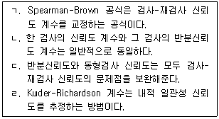
- ㄱ, ㄴ
- ㄴ, ㄷ
- ㄷ, ㄹ
- ㄱ, ㄴ, ㄹ
- ㄱ, ㄷ, ㄹ
(정답률: 13%)
61. 심리검사에 관한 설명으로 옳지 않은 것은?
- 특정 영역의 행동 전집을 수집하여 측정한다.
- 심리적 특성의 개인차를 비교할 수 있다.
- 심리적 구성개념을 측정하기 위한 도구이다.
- 개인의 행동을 예측하는 것이 하나의 목적이다.
- 심리검사에서 나온 결과는 잠정적인 것이다.
(정답률: 27%)
62. K-WAIS-IV에 관한 설명으로 옳은 것은?
- 전체지능은 5개의 지수점수로 산출된다.
- 처리속도는 숫자, 산수, 순서화로 구성된다.
- 지각추론은 동형찾기, 기호쓰기, 지우기로 구성된다.
- 작업기억은 토막짜기, 행렬추론, 퍼즐, 무게비교로 구성된다.
- 언어이해는 공통성, 어휘, 상식, 이해로 구성된다.
(정답률: 32%)
63. K-WISC-V의 지수영역이 아닌 것은?
- 언어이해
- 지각추론
- 시각공간
- 작업기억
- 처리속도
(정답률: 15%)
64. 신경심리 검사와 측정하고자 하는 인지기능을 옳게 연결한 것은?
- Boston naming test - 기억기능
- Visual span test - 시공간 능력
- California verbal learning test - 언어기능
- Wisconsin card sorting test - 실행기능
- Clock test - 주의집중력
(정답률: 22%)
65. 지능검사에서 측정의 표준오차(SEM)에 관한 설명으로 옳은 것을 모두 고른 것은?
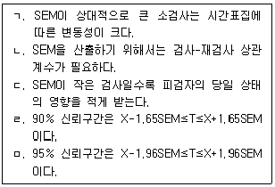
- ㄱ, ㄷ
- ㄱ, ㄴ, ㄷ
- ㄱ, ㄹ, ㅁ
- ㄴ, ㄷ, ㄹ, ㅁ
- ㄱ, ㄴ, ㄷ, ㄹ, ㅁ
(정답률: 10%)
66. 지능검사 결과에 관한 설명으로 옳은 것은?
- 지수 115의 상대적 위치는 소검사 환산점수 13과 같다.
- 지수 110의 상대적 위치는 소검사 환산점수 11과 같다.
- 소검사 환산점수 10의 백분위는 75이다.
- 소검사 환산점수 7의 백분위는 지수 90의 백분위와 같다.
- 소검사 환산점수 7의 백분위는 90이다.
(정답률: 7%)
67. K-WISC-IV 프로파일에 관한 설명으로 옳은 것을 모두 고른 것은?
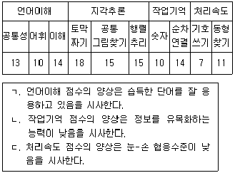
- ㄱ
- ㄱ, ㄴ
- ㄱ, ㄷ
- ㄴ, ㄷ
- ㄱ, ㄴ, ㄷ
(정답률: 26%)
68. MMPI-2에서 임상척도가 아닌 것은?
- 편집증(Pa)
- 강박증(Pt)
- 히스테리(Hy)
- 통제결여(DISC)
- 경조증(Ma)
(정답률: 23%)
69. MMPI-A의 타당도 척도가 아닌 것은?
- FBS
- ?(무응답)
- F
- L
- K
(정답률: 18%)
70. MBTI에 관한 설명으로 옳지 않은 것은?
- 내향-외향 구분은 객체와 주체의 상대적 비중이 중요하다.
- 감각-직관 구분은 사물인식과 인간관계의 상대적 비중이 중요하다.
- 판단-인식 구분은 의식과 무의식의 상대적 비중이 중요하다.
- 판단-인식 구분은 융(C. Jung)의 개념을 확장해서 추가한 것이다.
- 사고-감정 구분은 논리성과 친화성의 상대적 비중이 중요하다.
(정답률: 12%)
71. MMPI-2 검사결과 상승척도 쌍에 관한 설명으로 옳은 것은?
- 8-9: 타인에게 소외당했다는 느낌을 가지며, 권위적 인물에 대한 적개심이 높다.
- 4-5: 분노를 충동적으로 표현하고, 충동과 후회를 반복한다.
- 3-6: 만성적이고 강한 분노감을 보이며, 적절한 감정표현을 못한다.
- 1-4: 다양한 신체적 증상을 호소하고, 우울과 높은 긴장을 보인다.
- 1-3: 신체형 장애를 보이고, 문제의 근원을 외재화하는 성향이 많다.
(정답률: 23%)
72. 투사적 검사에 관한 설명으로 옳은 것을 모두 고른 것은?
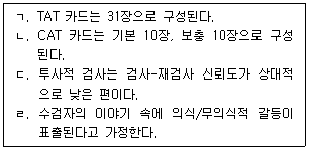
- ㄱ, ㄴ, ㄷ
- ㄱ, ㄴ, ㄹ
- ㄱ, ㄷ, ㄹ
- ㄴ, ㄷ, ㄹ
- ㄱ, ㄴ, ㄷ, ㄹ
(정답률: 22%)
73. 로샤 검사의 EA에 관한 설명으로 옳지 않은 것은?
- M과 WSumC를 합한 값이다.
- 개인의 가용자원을 반영한 것이다.
- WSumC는 C와 CF반응을 합한 값이다.
- 연령수준에 따라서 값이 변화된다.
- 자발적이고 능동적인 정신활동을 반영한다.
(정답률: 8%)
74. 로샤 검사에 관한 설명으로 옳은 것은?
- 수검자가 쉽게 심리적 방어를 할 수 있다.
- 검사 실시에 대한 수검자의 거부감이 객관적 검사에 비해 높다.
- 반응영역 기호 S는 단독으로 사용할 수 없다.
- 개인의 심리적 어려움을 상대적 백분위로 나타낸다.
- 자유로운 반응을 제한해서 스토리텔링하게 한다.
(정답률: 18%)
75. 지능검사에 관한 설명으로 옳지 않은 것은?
- 웩슬러검사는 최초로 IQ 개념을 도입하였다.
- 웩슬러검사는 성인용 지능검사로 출발했다.
- 스텐포드-비네검사는 비율지능지수를 사용한다.
- 비네검사는 최초의 지능검사이다.
- 스텐포드-비네검사는 아동용 지능검사로 출발했다.
(정답률: 20%)
4과목: 이상심리
76. A의 반복적 자살기도 원인을 설명하는 이론과 가능한 해석의 연결이 옳지 않은 것은?
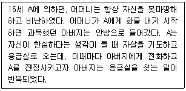
- 행동주의 - 자살기도 시 아버지의 관심을 얻어서이다.
- 인지주의 - 자신이 무능력하다는 사고 때문이다.
- 인본주의 - 부정적 자기상으로 긍정적 잠재력을 실현하지 못해서이다.
- 대상관계 - 어머니와 안정적인 관계를 이루지 못해서이다.
- 실존주의 - 가족 내 구조와 의사소통 문제 때문이다.
(정답률: 33%)
77. 신경생물학 연구 결과에 나타난 뇌 부위와 주요 기능의 연결이 옳지 않은 것은?
- 편도체(amygdala) - 정서기억 담당
- 기저핵(basal ganglia) - 운동의 계획과 실행
- 해마(hippocampus) - 장기기억 관여
- 시상하부(hypothalamus) - 섭식행동 조절
- 소뇌(cerebellum) - 사고 통제
(정답률: 11%)
78. 정신상태검사(Mental Status Examination)에서 지남력을 측정하는 질문을 모두 고른 것은?
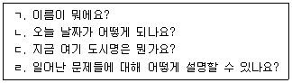
- ㄱ, ㄴ, ㄷ
- ㄱ, ㄴ, ㄹ
- ㄱ, ㄷ, ㄹ
- ㄴ, ㄷ, ㄹ
- ㄱ, ㄴ, ㄷ, ㄹ
(정답률: 30%)
79. DSM-IV와 비교했을 때 DSM-5의 주요 변화로 옳지 않은 것은?
- 다축체계를 폐기하였다.
- 건강염려증이 질병불안장애로 대체되었다.
- 물질관련 및 중독장애에 도박장애를 포함시켰다.
- 강박장애는 불안장애와 다른 범주로 분류하였다.
- '달리 명시된' 혹은 '명시되지 않는' 진단을 '달리 분류되지 않는'으로 변경하였다.
(정답률: 23%)
80. DSM-5의 신경발달장애에 관한 설명으로 옳은 것을 모두 고른 것은?
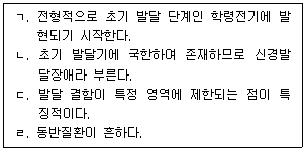
- ㄱ, ㄴ
- ㄱ, ㄹ
- ㄴ, ㄷ
- ㄴ, ㄹ
- ㄷ, ㄹ
(정답률: 21%)
81. B가 겪고 있는 정신장애에 관한 설명으로 옳지 않은 것은?
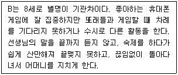
- 평균적으로 일반 아동들보다 이 장애를 가진 아동들의 학업성취 수준이 낮다.
- DSM-5에서는 파괴적, 충동조절 및 품행장애로 분류된다.
- 일반적으로 흥분제가 치료에 사용된다.
- 기분 문제를 동반하는 경우가 많다.
- 도파민의 비정상적 활동이 이 장애의 원인으로 제안되었다.
(정답률: 23%)
82. 다음은 DSM-5의 조현병 스펙트럼 장애에 속하는 정신장애의 일부이다. 정신병리의 심각도에 따라 경증에서 중증 순으로 바르게 나열한 것은?
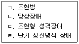
- ㄴ - ㄷ - ㄹ - ㄱ
- ㄴ - ㄹ - ㄱ - ㄷ
- ㄷ - ㄴ - ㄹ - ㄱ
- ㄷ - ㄹ - ㄱ - ㄴ
- ㄹ - ㄴ - ㄷ - ㄱ
(정답률: 21%)
83. DSM-5의 조현양상장애에 관한 설명으로 옳지 않은 것은?
- 장애의 특징적 증상은 조현병과 동일하다.
- 장애의 지속기간은 최대 3개월을 넘지 않는다.
- 장애의 지속기간은 전조기, 활성기, 잔류기로 구분된다.
- 사회적, 직업적 기능의 손상은 필수 진단 기준이 아니다.
- 장애가 물질의 생리적 효과나 다른 의학적 상태로 인한 것이 아니다.
(정답률: 15%)
84. 조증 삽화를 겪고 있는 사람이 타인과 대화할 때 나타나는 전형적인 모습으로 옳은 것은?
- 빠르고 크게 말한다.
- 다른 사람의 이야기에 잘 집중한다.
- 수면을 이루지 않아 피곤해 보인다.
- 다른 사람에게 조언이나 충고를 요청한다.
- 너무 많은 생각이 떠올라 말을 하지 못한다.
(정답률: 28%)
85. DSM-5의 주요우울 삽화 존재 여부를 판단하는 데 필요한 주요 증상을 모두 고른 것은? (단, 2주 연속 거의 매일 증상이 지속됨을 전제로 함)
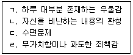
- ㄱ, ㄴ
- ㄷ, ㄹ
- ㄱ, ㄴ, ㄷ
- ㄱ, ㄷ, ㄹ
- ㄱ, ㄴ, ㄷ, ㄹ
(정답률: 32%)
86. DSM-5의 불안장애에 속하는 장애는?
- 강박장애
- 질병불안장애
- 선택적 함구증
- 반응성 애착장애
- 외상후 스트레스장애
(정답률: 27%)
87. 클락(D. Clark)이 제시한 공황장애의 인지모델에 관한 설명으로 옳은 것을 모두 고른 것은?
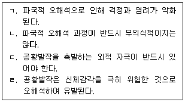
- ㄱ, ㄴ, ㄷ
- ㄱ, ㄴ, ㄹ
- ㄱ, ㄷ, ㄹ
- ㄴ, ㄷ, ㄹ
- ㄱ, ㄴ, ㄷ, ㄹ
(정답률: 23%)
88. 다음에 해당하는 특정공포증 치료법은?
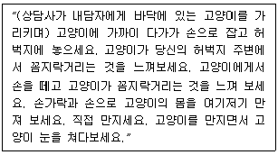
- 홍수법
- 모델링
- 이완훈련
- 바이오피드백
- 내재적 둔감법
(정답률: 32%)
89. 다음 사례에 대해 추가적 정보를 수집한 후 DSM-5에 근거하여 판단한 내용으로 옳은 것은?
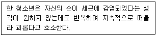
- 감염되었다는 생각이 떠오를 때 불안하지 않으므로 강박장애가 아니다.
- 강박행동이 발견되거나 보고되지 않으므로 강박장애가 아니다.
- 감염에 대해 우려하는 것은 당연하므로 강박장애가 아니다.
- 감염되었다는 생각이나 강박행동을 하는 데 시간을 소모하지 않으므로 강박장애가 아니다.
- 감염되었다는 믿음이 사실이라고 완전히 확신하지 않으므로 강박장애가 아니다.
(정답률: 17%)
90. DSM-5의 신체증상장애 감별진단에 관한 설명으로 옳지 않은 것은?
- 공황장애와는 달리 신체증상이 더 지속적이다.
- 범불안장애와는 달리 신체증상이 걱정의 주요 초점이다.
- 망상장애보다 신체증상에 대한 믿음과 행동이 더 강력하다.
- 전환장애와는 달리 증상을 유발하는 고통에 초점이 더 맞추어져 있다.
- 신체이형장애와는 달리 신체외형 결함에 대한 공포가 주된 관심이 아니다.
(정답률: 16%)
91. 다음에 해당되는 DSM-5의 해리성 기억상실의 기억상실 형태는?
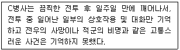
- 국소적 기억상실
- 둔주성 기억상실
- 전반적 기억상실
- 지속성 기억상실
- 체계화된 기억상실
(정답률: 13%)
92. DSM-5에서 신경성 식욕부진증과 비교하였을 때, 신경성 폭식증의 특징으로 옳은 것은?
- 기분변화의 과거력 빈도가 더 낮다.
- 성격장애 동반이환율이 더 낮다.
- 무월경 문제가 더 자주 보고된다.
- 강한 충동을 통제하기가 더 어렵다.
- 치과적 문제가 덜 발견된다.
(정답률: 26%)
93. 다음에 나타난 사고과정의 문제는?
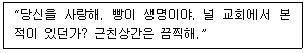
- 우원증(circumstantiality)
- 보속증(perseveration)
- 말비빔(word salad)
- 음향연상(clang association)
- 연상이완(loosening of association)
(정답률: 15%)
94. 다음에 해당하는 DSM-5의 성 관련 장애는?
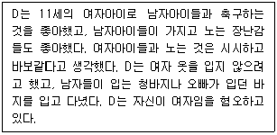
- 성별 불쾌감
- 성정체감장애
- 물품음란장애
- 복장도착장애
- 성적피학장애
(정답률: 31%)
95. DSM-5의 파괴적 기분조절부전장애의 대표적인 임상적 징후는?
- 분노발작
- 기물 파손
- 주의집중 곤란
- 반복되는 우울감
- 성인을 향한 적개심
(정답률: 31%)
96. 진정제가 아닌 물질은?
- 알코올(alcohol)
- 바비튜레이트(barbiturate)
- 헤로인(heroin)
- 메스암페타민(methamphetamine)
- 벤조다이아제핀(benzodiazepine)
(정답률: 8%)
97. DSM-5의 섬망에 관한 설명으로 옳지 않은 것은?
- 흔히 수면-각성 주기의 장애를 보인다.
- 섬망의 유병률은 노인에게서 가장 높다.
- 대개 1개월 정도의 기간에 걸쳐 지속적으로 발생한다.
- 기저의 인지 변화를 동반하는 주의나 의식의 장애이다.
- 섬망에 수반된 지각장애는 오해, 착각 또는 환각을 포함한다.
(정답률: 9%)
98. DSM-5의 성격장애와 주요 특징의 연결이 옳지 않은 것은?
- 조현성 성격장애 - 사회적 유대로부터의 유리
- 경계선 성격장애 - 높은 충동성
- 편집성 성격장애 - 타인에 대한 불신
- 회피성 성격장애 - 사회적 관계의 억제
- 자기애성 성격장애 - 지나친 의존성
(정답률: 35%)
99. 다음 ( )에 들어갈 용어를 바르게 나열한 것은?
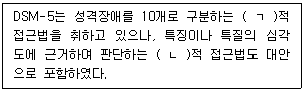
- ㄱ: 이론, ㄴ: 경험
- ㄱ: 유형, ㄴ: 범주
- ㄱ: 차원, ㄴ: 기질
- ㄱ: 범주, ㄴ: 차원
- ㄱ: 유형, ㄴ: 특성
(정답률: 30%)
100. DSM-5의 주요 및 경도 신경인지장애에 관한 설명으로 옳지 않은 것은?
- 인지 결손은 오직 섬망이 있는 상황에서만 발생하는 것은 아니다.
- 60세 이상에서의 유병률은 연령의 증가에 따라 높아지는 경향이 있다.
- 인지 수행의 손상이 표준화된 신경심리검사로 입증되어야만 장애로 진단된다.
- 경도 신경인지장애는 인지 결손이 일상 활동에서의 독립적 능력을 방해하지 않는다.
- 주요 신경인지장애는 원인에 따라 다양한 하위유형으로 구분된다.
(정답률: 27%)